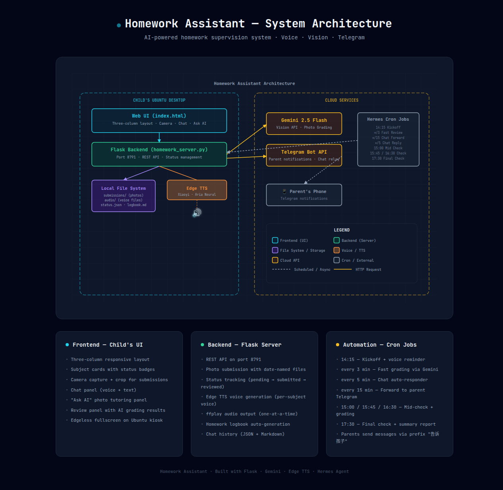
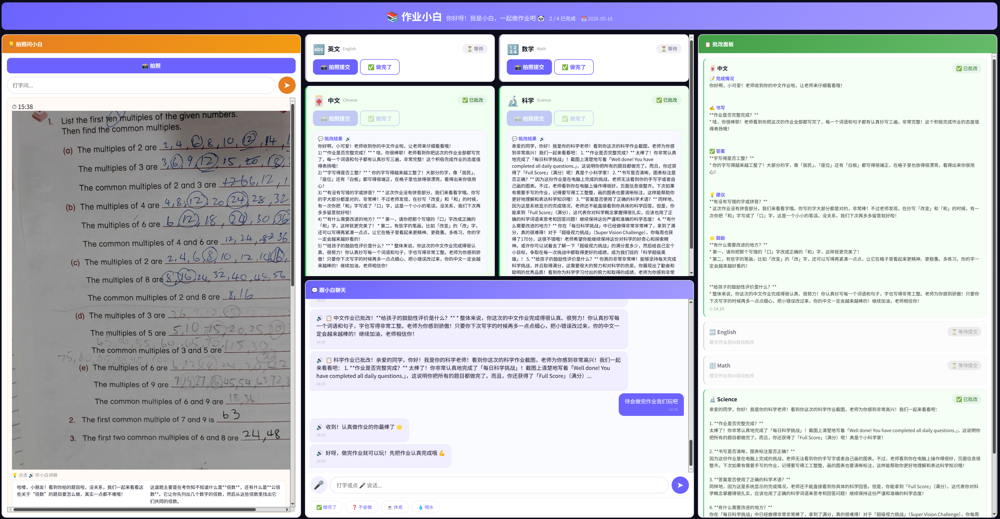

Building an AI-Powered Homework Supervisor That Actually Works
TL;DR: I built a fully automated homework supervision system for my 9-year-old daughter (Grade 4, Singapore curriculum) using Flask, Google Gemini Vision, Edge TTS, and Hermes Agent cron jobs. It speaks reminders in bilingual voices, grades math/English/science/chinese homework photos with AI, syncs progress to my phone via Telegram, and generates a daily logbook — all on a single Ubuntu desktop with zero extra hardware.
The Problem
If you have school-aged children, you know the drill:
"Have you done your homework yet?" "Almost..." (they're not) "Can I see it?" runs away to grab the exercise book "This problem is wrong. Fix it." sigh
This cycle repeats every single day. Working parents can't be home at 3 PM to supervise. Kids forget. Kids procrastinate. And even when they finish, nobody checks the work until evening — by which point the learning moment has passed.
What I wanted was simple:
- A voice that calls out at 2:15 PM: "Time for homework!"
- A checklist that tracks each subject
- Photo submission with AI grading within seconds
- Parent notifications so I know what's happening from my phone
- A daily logbook I can read when I get home
The Architecture
Here's how the system fits together:

View full interactive architecture diagram (open in browser — pure SVG, works offline)
The Stack
| Component | Technology | Role |
|---|---|---|
| Frontend | HTML/CSS/JS (static) | Child's UI — subject cards, camera, chat, ask AI |
| Backend | Python Flask (port 8791) | REST API, file management, status tracking |
| Voice | Edge TTS (Azure) | Bilingual text-to-speech via speakers |
| Grading | Gemini 2.5 Flash Vision | AI photo grading |
| Scheduling | Hermes Agent Cron Jobs | Automated reminders, checks, grading |
| Parent Sync | Telegram | Real-time notifications |
| Storage | Local filesystem | Photos, audio, logbook, chat history |
Child's Workflow
Here's what happens from the child's perspective each afternoon:
📐 Open interactive workflow diagram (Excalidraw — zoomable, editable)
Step-by-step:
-
14:15 — Voice Kickoff: The system plays a voice reminder through the desktop speakers:
"小同学，该做作业啦！还有中文、英文、Math、Science 没完成，加油！"
(Chinese subjects use a warm child's voice; English subjects use a clear English voice)
-
Child opens the Web UI: A full-screen browser window (opened via kiosk mode) displays the three-column dashboard.
-
Four subject cards: Chinese, English, Math, Science — each with status badges:
- ⏳ Pending → need to start
- 📸 Submitted → waiting for AI grading
-
✅ Reviewed → done and checked
-
Photo submission: The child clicks "📸 拍照提交" → camera opens → takes a photo, can crop to select specific problems → submits.
-
Instant AI grading: Within 5-15 seconds, Gemini Vision returns a detailed review covering completeness, handwriting, correctness, and suggestions — all framed in encouraging language appropriate for a 9-year-old.
-
Voice confirmation: A chime plays: "数学作业已收到！"
-
Chat with Xiaobai: The child can type or use voice-to-text to chat with an AI homework assistant, ask questions, or just say "I'm tired."
-
Ask AI for help: Stuck on a problem? Take a photo → AI explains step-by-step with voice playback.
-
Parent receives updates: Everything — every submission, every review, every chat message — is forwarded to the parent's Telegram in real-time.
Key Features Deep Dive
🎤 Bilingual Voice System
Each subject speaks in its own language:
| Subject | Voice | Style |
|---|---|---|
| 中文 | zh-CN-XiaoyiNeural |
Warm child voice (Xiaobai) |
| 数学 | zh-CN-XiaoyiNeural |
Same — Chinese for math |
| English | en-US-AriaNeural |
Clear English voice |
| Science | en-US-AriaNeural |
Clear English voice |
All emoji are stripped before TTS so the voice doesn't stumble. Only ONE audio plays at a time — new messages interrupt old ones, preventing cacophony.
📸 Smart Photo Submission
- Filename convention:
{subject}_{YYYYMMDD}_{seq:03d}.jpg(e.g.,math_20260515_001.jpg) - Files are organized by date automatically
- Old files are cleaned up daily at kickoff
- The UI shows exactly which photos were submitted per subject
🤖 Gemini Vision Grading
The grading prompt is carefully crafted for a 9-year-old:
- Check if the homework is complete
- Evaluate handwriting clarity
- Check for spelling/grammar errors
- Provide improvement suggestions
- Always end with encouragement
Reviews are voiced back to the child and recorded in the logbook for parents.
📱 Telegram Parent Sync
Parents get real-time notifications:
- 📸 "数学作业已提交" (Math homework submitted)
- 📋 "数学作业已批改！好孩子，这次的数学作业你完成得很认真..."
- 💬 "孩子说：我做完了！"
- 🏁 "今日作业完成：中文 ✅、英文 ✅、数学 ✅、科学 ✅"
Parents can also send messages back via Telegram prefix:
告诉孩子 今天表现不错，继续加油！
Automation Schedule
The entire system runs on a tight cron schedule during homework hours (14:00–18:00):
| Time | Job | What Happens |
|---|---|---|
| 14:15 | Kickoff | Reset status, cleanup old files, play voice reminder |
| every 3min | Fast Review | Check for new submissions → grade with Gemini → voice review |
| every 5min | Chat Responder | Read child's chat messages → auto-reply with AI |
| every 5min | Parent Relay | Forward parent messages to child's UI |
| every 15min | Telegram Forward | Forward child's chat activity to parent |
| 15:00 | Mid Check 1 | Grade pending submissions, remind unfinished |
| 15:45 | Mid Check 2 | Same — escalate reminders |
| 16:30 | Mid Check 3 | Final grading push |
| 17:30 | Final Check | Grade everything, generate summary logbook, send to Telegram |
The Web UI

The child's dashboard has a dark theme (#0d0d1a background) with three columns:
Left: Ask AI Panel — Take a photo of a problem you're stuck on. AI explains step-by-step. Each explanation has a 🔊 button that reads it aloud in segments.
Center: Subject Cards + Chat — Four subject cards show status at a glance. Below them is a full chat interface with microphone input for voice-to-text and quick-reply buttons ("✅ 做完了", "❓ 不会做", "☕ 休息", "💧 喝水").
Right: Review Panel — All grading results organized by subject. Structured reviews show sections for completion, handwriting, accuracy, suggestions, and encouragement.
Anti-Sleep Features
The system disables screen blanking, screen saver, and sleep mode during homework hours so the child always sees the dashboard.
The Homework Logbook
Every day, a homework_logbook.md is automatically generated:
# Homework Logbook — 2026-05-16
**Session:** 14:15 – 17:30
**Reminders sent:** 7
## Subjects
### 🀄 中文
- Status: ✅ Reviewed at 15:02
- Submissions: 1 photos
- Review: 字迹清晰，没有错别字...
- **Suggestion:** 下次记得把整份作业都写完...
### 🔢 数学
- Status: ✅ Reviewed at 14:25
- ...
This file persists forever — parents can browse past weeks to track progress.
System Requirements
What you need to run this:
- Hardware: Any Linux desktop/laptop with speakers and a webcam (we use a Logitech StreamCam + Tesla V100 GPU, but CPU-only works too)
- OS: Ubuntu (or any Linux distro)
- Software: Python 3.12, Flask, Edge TTS CLI (
edge-tts) - API Keys: Google Gemini API key (for vision grading)
- Messaging: Telegram account (for parent notifications)
Zero extra hardware. The child uses whatever desktop or tablet is already in the house. No smart speakers, no tablets to buy, no subscriptions beyond the Gemini API (which costs pennies per day).
How to Build It Yourself
1. Set up the server
pip install flask google-genai edge-tts
mkdir -p ~/homework/{web,submissions,audio}
2. Create the Flask server
The server handles: - Photo submission with date-named files - Status tracking (pending → submitted → reviewed) - Edge TTS voice generation - Homework logbook generation - Chat history persistence - AI grading via Gemini Vision API
3. Create the Web UI
Build a three-column dashboard with: - Subject cards with dynamic status - Camera integration with crop support - Chat panel with voice input - AI tutoring panel ("Ask AI")
4. Set up Hermes cron jobs
Configure automated agents for: - Daily kickoff (14:15) - Fast review (every 3 minutes) - Chat forwarding to Telegram - Mid-checks (15:00, 15:45, 16:30) - Final check (17:30)
5. Connect Telegram
Set up Telegram integration so parents receive real-time updates and can send messages back to the child.
Real-World Results
After 2 weeks of running this system:
- Homework completion rate: 95%+ before 5 PM (up from ~60%)
- Parental stress: Significantly reduced — I get updates without asking
- Child engagement: The voice reminders and instant grading make it feel like a game, not a chore
- Learning quality: The AI grading catches errors immediately, so the child fixes them while the material is fresh
- Teacher feedback: "We've noticed improvement in homework quality"
What's Next
- Multi-child support (more than one student profile)
- Custom subject schedules (not all subjects every day)
- Reward system integration (points/stars for timely completion)
- Screenshots & report cards emailed weekly to parents
Open Source?
All code lives on my local machine. I'm considering open-sourcing the entire system if there's enough interest. The architecture is simple enough that anyone with basic Python skills can adapt it for their own needs.
Final thought: The best AI systems aren't the ones that replace human interaction — they're the ones that augment it. This homework assistant doesn't replace me as a parent. It amplifies my ability to support my child's learning, even when I'm not in the room.
Questions? Interested in the code? Reach out — I'd love to hear from you.